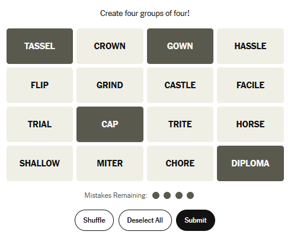
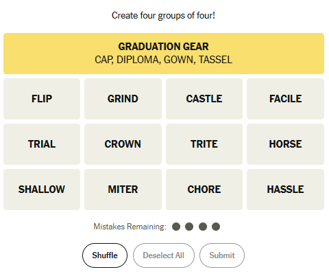
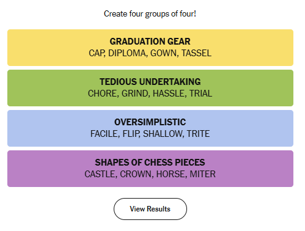

📄 AI Assisted Coding Assignment
← Back to Resource HubIntroduction
In this assignment, you will create your own version of the Connections game inspired by the New York Times using AI generated code to assist you.
How to Play Connections

Step 1
Try to find words that belong together.

Step 2
Select four words that form a group and submit them.

Step 3
Try to find all four groups, but remember you are only allowed 4 mistakes.

Step 4
You win by completing all groups before running out of mistakes.
Example
The words Tassel, Gown, Cap, and Diploma belong under Graduation Gear.
AI Chatbot Options
You can complete this project using any chatbot that allows you to ask coding-related questions. There are many AI Chatbots to choose from. Here are a few suggestions:
- ChatGPT
- Gemini
- Copilot
Each AI assistant (ChatGPT, Gemini, Copilot, etc.) may explain or format code differently. Some tools provide full files, while others give short snippets. If one chatbot gives confusing output, try asking a different one or rephrasing your request. Always review, test, and debug the code yourself—even AI-generated programs will need adjustments!
Tips
- Be descriptive when prompting the AI.
- Plan out what you want to accomplish, and take small steps to reach your end goal.
- Expect debugging and many iterations.
Requirements
You must create the following files:
- index.html
- style.css
- script.js
You must also write a one-page reflection including:
- AI tools used
- Quality of the code provided by the AI
- Debugging process and tweaks made after the initial prompt